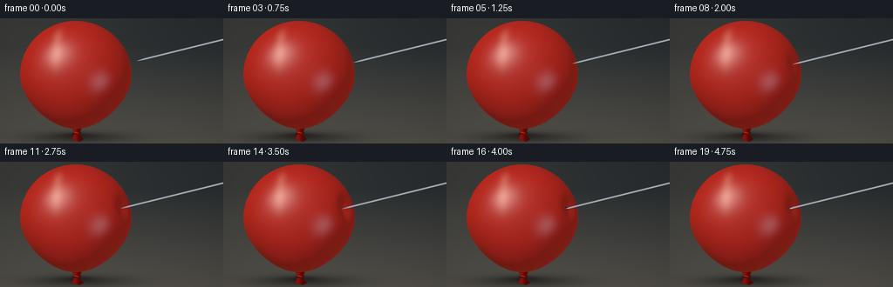
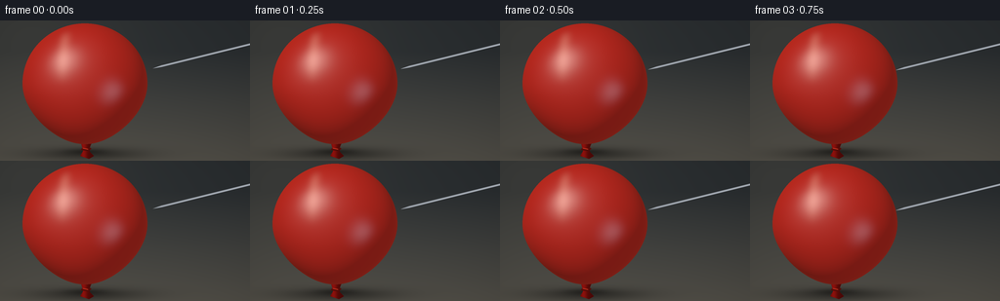
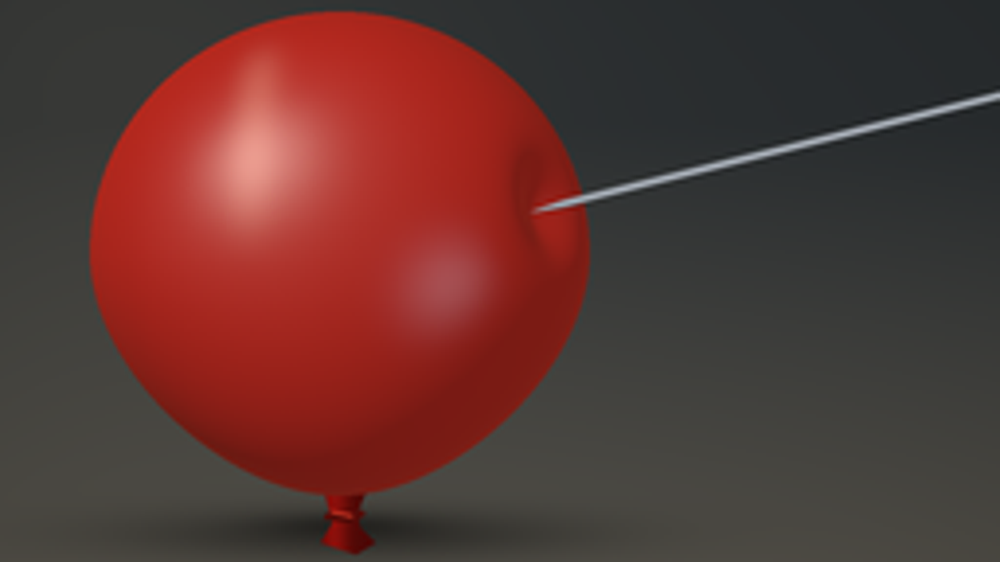
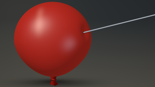

CODING AGENTS AS PIXEL WORLD MODELS
traex/GPT-6.1-Sol · mechanics_0033
点击播放 · 原生 RGB 像素
逐轮保存的候选
回放视频、检查图与代码变化。
每份候选均可单独播放。实际图片检查记录在下方工具轨迹中。
候选 01播放与检查图
点击播放 · 原生 RGB 像素
展开代码变化
--- 上一保存版本
+++ 本次保存版本
@@ -0,0 +1,185 @@
+"""Procedurally rendered macro shot of steel puncturing taut latex.
+Only analytic surfaces, numpy lighting, and Pillow antialiasing are used.
+"""
+from pathlib import Path
+import json
+import numpy as np
+from PIL import Image, ImageDraw, ImageFilter
+import artifact_io
+
+ROOT=Path(__file__).resolve().parent
+SPEC=json.loads((ROOT/'task_spec.json').read_text())
+S=4
+W,H=SPEC['width']*S,SPEC['height']*S
+Y,X=np.mgrid[0:H,0:W].astype(float)
+X=(X+.5)/S; Y=(Y+.5)/S
+CX,CY=87.,65.
+A,B,C=64.,62.,48.
+# The camera looks toward -z; coordinates are in image pixels.
+contact_q=np.array([.875,-.20,np.sqrt(1-.875**2-.20**2)])
+axis=np.array([.907,-.225,.358]); axis/=np.linalg.norm(axis)
+
+
+def aradius(y):
+ t=(y-CY)/B
+ return A*(1-.17*np.maximum(t,0)**1.8)
+
+P0=np.array([CX+aradius(CY+B*contact_q[1])*contact_q[0],CY+B*contact_q[1],C*contact_q[2]])
+
+
+def field(x,y,z,dent):
+ qx=(x-CX)/aradius(y); qy=(y-CY)/B; qz=z/C
+ r=np.sqrt(qx*qx+qy*qy+qz*qz+1e-15)
+ dot=(qx*contact_q[0]+qy*contact_q[1]+qz*contact_q[2])/r
+ g=np.exp(-(1-dot)/.022)
+ return r-1+dent*g
+
+
+def dent_for(point):
+ q=(point-np.array([CX,CY,0]))/np.array([aradius(point[1]),B,C])
+ r=np.linalg.norm(q)
+ return max(0,(1-r)/np.exp(-(1-np.dot(q/r,contact_q))/.022))
+
+
+def background():
+ # A softly defocused studio, with a muted warm work surface.
+ top=np.array([.165,.181,.190]); bottom=np.array([.335,.323,.292])
+ a=np.clip((Y-32)/118,0,1)[...,None]
+ col=top*(1-a)+bottom*a
+ leftglow=np.exp(-((X-19)/99)**2-((Y-15)/86)**2)
+ col+=leftglow[...,None]*np.array([.065,.053,.035])
+ vign=(np.maximum(0,((X-118)/177)**2+((Y-65)/121)**2))
+ col*=1-.12*vign[...,None]
+ sh=np.exp(-((X-91)/58)**2-((Y-137)/6.5)**2)
+ col*=1-.40*sh[...,None]
+ sh2=np.exp(-((X-88)/20)**2-((Y-134.5)/3.)**2)
+ col*=1-.30*sh2[...,None]
+ return col
+
+BG=background()
+# Deterministic, very fine non-learned surface texture.
+texture=.0020*np.sin(X*13.91+Y*5.33)*np.sin(Y*18.17-X*2.32)
+
+
+def draw_neck(col,shrink):
+ # The tied neck, behind the inflated body.
+ im=Image.new('L',(W,H)); d=ImageDraw.Draw(im)
+ pts=[(82,122),(95,122),(91.5,131),(92,135),(96,139),(91,142),(82,139),(85,134),(84,130)]
+ d.polygon([(int(x*S),int(y*S)) for x,y in pts],fill=255)
+ mask=np.array(im)/255.
+ shade=.30+.25*np.exp(-((X-85.5)/3.6)**2)
+ nc=np.stack([shade,shade*.115,shade*.082],axis=-1)
+ col=col*(1-mask[...,None])+nc*mask[...,None]
+ im=Image.fromarray(np.uint8(np.clip(col,0,1)*255)); d=ImageDraw.Draw(im)
+ d.line([(83*S,132*S),(90*S,133*S),(93*S,131*S)],fill=(84,12,8),width=2*S)
+ d.line([(85*S,131*S),(90*S,132*S)],fill=(198,52,35),width=S)
+ return np.array(im)/255.
+
+
+def render(i):
+ t=i/(SPEC['frames']-1)
+ # Approach, elastic resistance, and then a short, gradual entry.
+ if t<.28:
+ advance=15*(1-t/.28)
+ dent=0.; hole=0.
+ elif t<.76:
+ u=(t-.28)/.48
+ advance=-8.4*(u**.88)
+ dent=dent_for(P0+advance*axis)
+ hole=0.
+ else:
+ u=(t-.76)/.24
+ advance=-8.4-4.8*u
+ dent=dent_for(P0-8.4*axis)*(1-.43*(1-np.exp(-4*u)))
+ hole=min(1,u*5)
+ tip=P0+advance*axis
+ col=draw_neck(BG.copy(),0)
+ qx=(X-CX)/aradius(Y); qy=(Y-CY)/B
+ valid=qx*qx+qy*qy<1
+ zell=C*np.sqrt(np.maximum(0,1-qx*qx-qy*qy))
+ # Bracket the visible surface and solve its analytically specified shape.
+ hi=zell.copy(); lo=np.maximum(0,zell-23)
+ for _ in range(23):
+ mid=(hi+lo)*.5
+ positive=field(X,Y,mid,dent)>0
+ hi=np.where(positive,mid,hi)
+ lo=np.where(positive,lo,mid)
+ Z=(lo+hi)*.5
+ valid &= field(X,Y,Z,dent)<.002
+ eps=.04
+ gx=(field(X+eps,Y,Z,dent)-field(X-eps,Y,Z,dent))/(2*eps)
+ gy=(field(X,Y+eps,Z,dent)-field(X,Y-eps,Z,dent))/(2*eps)
+ gz=(field(X,Y,Z+eps,dent)-field(X,Y,Z-eps,dent))/(2*eps)
+ N=np.stack([gx,gy,gz],-1)
+ N/=np.maximum(1e-10,np.linalg.norm(N,axis=-1))[...,None]
+ # Broad photographic key and fill, plus glossy softbox reflections.
+ L=np.array([-.48,-.58,.66]); L/=np.linalg.norm(L)
+ L2=np.array([.63,.20,.74]); L2/=np.linalg.norm(L2)
+ ndl=np.maximum(0,N@L); ndl2=np.maximum(0,N@L2)
+ diffuse=.22+.62*ndl+.13*ndl2
+ linear=np.array([.57,.020,.011])[None,None,:]*diffuse[...,None]
+ # Fresnel scattering in thin latex, and a warm edge/back light.
+ fres=(1-np.maximum(0,N[...,2]))**2.7
+ linear+=fres[...,None]*np.array([.058,.006,.002])
+ view=np.array([0,0,1.])
+ # Slightly stretched highlight, blurred large rectangular softbox.
+ hn=(L+view); hn/=np.linalg.norm(hn)
+ spec=np.maximum(0,N@hn)**60
+ broad=np.maximum(0,N@hn)**13
+ linear+=(.21*spec+.038*broad)[...,None]*np.array([1.,.94,.84])
+ hn2=L2+view; hn2/=np.linalg.norm(hn2)
+ spec2=np.maximum(0,N@hn2)**90
+ linear+=(.075*spec2)[...,None]*np.array([.76,.85,1.])
+ # A subtle long reflection enhances the curved rubber without hard graphics.
+ line=np.exp(-((N[...,0]+.28)/.08)**2-((N[...,1]+.43)/.33)**4)
+ linear+=line[...,None]*np.array([.11,.09,.065])
+ rubber=np.clip(linear,0,1)**(1/2.2)
+ rubber+=texture[...,None]
+ # Small rim and dark aperture where the tip actually pierces the skin.
+ delta=np.stack([X-tip[0],Y-tip[1],Z-tip[2]],-1)
+ along=delta@axis
+ radial=np.linalg.norm(delta-along[...,None]*axis,axis=-1)
+ hole_radius=1.0*hole
+ aperture=(radial<hole_radius)&(along>-1)&(along<21)&valid
+ rim=np.exp(-((radial-(hole_radius+.30))/.30)**2)*hole
+ rim*=np.exp(-((along-8)/12)**2)
+ rubber*=1-.22*rim[...,None]
+ rubber+=rim[...,None]*np.array([.04,.012,.008])
+ rubber=np.where(aperture[...,None],np.array([.095,.008,.006]),rubber)
+ col=np.where(valid[...,None],rubber,col)
+ depth=np.where(valid,Z,-1e3)
+ depth=np.where(aperture,depth-4,depth)
+ # Ray/cylinder intersections with a genuinely tapered, sharp steel point.
+ # Candidate at the point on camera ray nearest to the needle axis.
+ ax,ay,az=axis
+ dx=X-tip[0]; dy=Y-tip[1]
+ s=(dx*ax+dy*ay)/(ax*ax+ay*ay)
+ zaxis=tip[2]+az*s
+ proj_dist=np.abs(dx*ay-dy*ax)/np.sqrt(ax*ax+ay*ay)
+ radius=1.08*np.clip(s/10,0,1)**.82
+ inside=(s>0)&(s<160)&(proj_dist<radius)
+ cross=np.sqrt(np.maximum(0,radius*radius-proj_dist*proj_dist))/np.sqrt(ax*ax+ay*ay)
+ zn=zaxis+cross
+ # Real metal's narrow bright reflection and dark lower side.
+ ds=((X-tip[0])*ay-(Y-tip[1])*ax)/np.sqrt(ax*ax+ay*ay)
+ nr=np.stack([X-tip[0]-s*ax,Y-tip[1]-s*ay,zn-tip[2]-s*az],-1)
+ nr/=np.maximum(1e-6,np.linalg.norm(nr,axis=-1))[...,None]
+ steelval=.18+.32*np.maximum(0,nr@L)+.22*np.maximum(0,nr[...,2])
+ gleam=np.exp(-((ds/radius.clip(.001)+.35)/.22)**2)
+ steelval+=.30*gleam
+ # Very fine axial brushing, never random frame-to-frame.
+ steelval+=.008*np.sin(s*11)
+ steel=np.stack([steelval*.93,steelval*.97,steelval*1.02],-1)
+ visible=inside&(zn>=depth-.08)
+ col=np.where(visible[...,None],steel,col)
+ im=Image.fromarray(np.uint8(np.clip(col,0,1)*255))
+ im=im.resize((SPEC['width'],SPEC['height']),Image.Resampling.LANCZOS)
+ return np.asarray(im)
+
+
+def main():
+ frames=np.stack([render(i) for i in range(SPEC['frames'])])
+ artifact_io.save(frames,ROOT)
+ print('Saved',frames.shape,frames.dtype)
+
+if __name__=='__main__': main()
候选 02播放与检查图
点击播放 · 原生 RGB 像素


展开代码变化
--- 上一保存版本
+++ 本次保存版本
@@ -89,7 +89,7 @@
hole=0.
else:
u=(t-.76)/.24
- advance=-8.4-4.8*u
+ advance=-8.4-6.8*u
dent=dent_for(P0-8.4*axis)*(1-.43*(1-np.exp(-4*u)))
hole=min(1,u*5)
tip=P0+advance*axis
@@ -139,7 +139,7 @@
delta=np.stack([X-tip[0],Y-tip[1],Z-tip[2]],-1)
along=delta@axis
radial=np.linalg.norm(delta-along[...,None]*axis,axis=-1)
- hole_radius=1.0*hole
+ hole_radius=1.65*hole
aperture=(radial<hole_radius)&(along>-1)&(along<21)&valid
rim=np.exp(-((radial-(hole_radius+.30))/.30)**2)*hole
rim*=np.exp(-((along-8)/12)**2)
@@ -148,7 +148,7 @@
rubber=np.where(aperture[...,None],np.array([.095,.008,.006]),rubber)
col=np.where(valid[...,None],rubber,col)
depth=np.where(valid,Z,-1e3)
- depth=np.where(aperture,depth-4,depth)
+ depth=np.where(aperture,depth-5,depth)
# Ray/cylinder intersections with a genuinely tapered, sharp steel point.
# Candidate at the point on camera ray nearest to the needle axis.
ax,ay,az=axis
可观测工具轨迹
实际执行的命令与返回图片。
命令 1exit 0
/bin/bash -lc 'ls -la && cat prompt.txt && cat GENERATION_RULES.md && cat task_spec.json'
命令 2exit 0
/bin/bash -lc "cat artifact_io.py && ls /usr/share/fonts/truetype && python - <<'PY' import importlib.util for x in ['numpy','PIL','scipy','cv2']: print(x, bool(importlib.util.find_spec(x))) PY"
命令 3exit 0
/bin/bash -lc "cat > generate.py <<'PY'
\"\"\"Procedurally rendered macro shot of steel puncturing taut latex.
Only analytic surfaces, numpy lighting, and Pillow antialiasing are used.
\"\"\"
from pathlib import Path
import json
import numpy as np
from PIL import Image, ImageDraw, ImageFilter
import artifact_io
ROOT=Path(__file__).resolve().parent
SPEC=json.loads((ROOT/'task_spec.json').read_text())
S=4
W,H=SPEC['width']*S,SPEC['height']*S
Y,X=np.mgrid[0:H,0:W].astype(float)
X=(X+.5)/S; Y=(Y+.5)/S
CX,CY=87.,65.
A,B,C=64.,62.,48.
# The camera looks toward -z; coordinates are in image pixels.
contact_q=np.array([.875,-.20,np.sqrt(1-.875**2-.20**2)])
axis=np.array([.907,-.225,.358]); axis/=np.linalg.norm(axis)
def aradius(y):
t=(y-CY)/B
return A*(1-.17*np.maximum(t,0)**1.8)
P0=np.array([CX+aradius(CY+B*contact_q[1])*contact_q[0],CY+B*contact_q[1],C*contact_q[2]])
def field(x,y,z,dent):
qx=(x-CX)/aradius(y); qy=(y-CY)/B; qz=z/C
r=np.sqrt(qx*qx+qy*qy+qz*qz+1e-15)
dot=(qx*contact_q[0]+qy*contact_q[1]+qz*contact_q[2])/r
g=np.exp(-(1-dot)/.022)
return r-1+dent*g
def dent_for(point):
q=(point-np.array([CX,CY,0]))/np.array([aradius(point[1]),B,C])
r=np.linalg.norm(q)
return max(0,(1-r)/np.exp(-(1-np.dot(q/r,contact_q))/.022))
def background():
# A softly defocused studio, with a muted warm work surface.
top=np.array([.165,.181,.190]); bottom=np.array([.335,.323,.292])
a=np.clip((Y-32)/118,0,1)[...,None]
col=top*(1-a)+bottom*a
leftglow=np.exp(-((X-19)/99)**2-((Y-15)/86)**2)
col+=leftglow[...,None]*np.array([.065,.053,.035])
vign=(np.maximum(0,((X-118)/177)**2+((Y-65)/121)**2))
col*=1-.12*vign[...,None]
sh=np.exp(-((X-91)/58)**2-((Y-137)/6.5)**2)
col*=1-.40*sh[...,None]
sh2=np.exp(-((X-88)/20)**2-((Y-134.5)/3.)**2)
col*=1-.30*sh2[...,None]
return col
BG=background()
# Deterministic, very fine non-learned surface texture.
texture=.0020*np.sin(X*13.91+Y*5.33)*np.sin(Y*18.17-X*2.32)
def draw_neck(col,shrink):
# The tied neck, behind the inflated body.
im=Image.new('L',(W,H)); d=ImageDraw.Draw(im)
pts=[(82,122),(95,122),(91.5,131),(92,135),(96,139),(91,142),(82,139),(85,134),(84,130)]
d.polygon([(int(x*S),int(y*S)) for x,y in pts],fill=255)
mask=np.array(im)/255.
shade=.30+.25*np.exp(-((X-85.5)/3.6)**2)
nc=np.stack([shade,shade*.115,shade*.082],axis=-1)
col=col*(1-mask[...,None])+nc*mask[...,None]
im=Image.fromarray(np.uint8(np.clip(col,0,1)*255)); d=ImageDraw.Draw(im)
d.line([(83*S,132*S),(90*S,133*S),(93*S,131*S)],fill=(84,12,8),width=2*S)
d.line([(85*S,131*S),(90*S,132*S)],fill=(198,52,35),width=S)
return np.array(im)/255.
def render(i):
t=i/(SPEC['frames']-1)
# Approach, elastic resistance, and then a short, gradual entry.
if t<.28:
advance=15*(1-t/.28)
dent=0.; hole=0.
elif t<.76:
u=(t-.28)/.48
advance=-8.4*(u**.88)
dent=dent_for(P0+advance*axis)
hole=0.
else:
u=(t-.76)/.24
advance=-8.4-4.8*u
dent=dent_for(P0-8.4*axis)*(1-.43*(1-np.exp(-4*u)))
hole=min(1,u*5)
tip=P0+advance*axis
col=draw_neck(BG.copy(),0)
qx=(X-CX)/aradius(Y); qy=(Y-CY)/B
valid=qx*qx+qy*qy<1
zell=C*np.sqrt(np.maximum(0,1-qx*qx-qy*qy))
# Bracket the visible surface and solve its analytically specified shape.
hi=zell.copy(); lo=np.maximum(0,zell-23)
for _ in range(23):
mid=(hi+lo)*.5
positive=field(X,Y,mid,dent)>0
hi=np.where(positive,mid,hi)
lo=np.where(positive,lo,mid)
Z=(lo+hi)*.5
valid &= field(X,Y,Z,dent)<.002
eps=.04
gx=(field(X+eps,Y,Z,dent)-field(X-eps,Y,Z,dent))/(2*eps)
gy=(field(X,Y+eps,Z,dent)-field(X,Y-eps,Z,dent))/(2*eps)
gz=(field(X,Y,Z+eps,dent)-field(X,Y,Z-eps,dent))/(2*eps)
N=np.stack([gx,gy,gz],-1)
N/=np.maximum(1e-10,np.linalg.norm(N,axis=-1))[...,None]
# Broad photographic key and fill, plus glossy softbox reflections.
L=np.array([-.48,-.58,.66]); L/=np.linalg.norm(L)
L2=np.array([.63,.20,.74]); L2/=np.linalg.norm(L2)
ndl=np.maximum(0,N@L); ndl2=np.maximum(0,N@L2)
diffuse=.22+.62*ndl+.13*ndl2
linear=np.array([.57,.020,.011])[None,None,:]*diffuse[...,None]
# Fresnel scattering in thin latex, and a warm edge/back light.
fres=(1-np.maximum(0,N[...,2]))**2.7
linear+=fres[...,None]*np.array([.058,.006,.002])
view=np.array([0,0,1.])
# Slightly stretched highlight, blurred large rectangular softbox.
hn=(L+view); hn/=np.linalg.norm(hn)
spec=np.maximum(0,N@hn)**60
broad=np.maximum(0,N@hn)**13
linear+=(.21*spec+.038*broad)[...,None]*np.array([1.,.94,.84])
hn2=L2+view; hn2/=np.linalg.norm(hn2)
spec2=np.maximum(0,N@hn2)**90
linear+=(.075*spec2)[...,None]*np.array([.76,.85,1.])
# A subtle long reflection enhances the curved rubber without hard graphics.
line=np.exp(-((N[...,0]+.28)/.08)**2-((N[...,1]+.43)/.33)**4)
linear+=line[...,None]*np.array([.11,.09,.065])
rubber=np.clip(linear,0,1)**(1/2.2)
rubber+=texture[...,None]
# Small rim and dark aperture where the tip actually pierces the skin.
delta=np.stack([X-tip[0],Y-tip[1],Z-tip[2]],-1)
along=delta@axis
radial=np.linalg.norm(delta-along[...,None]*axis,axis=-1)
hole_radius=1.0*hole
aperture=(radial<hole_radius)&(along>-1)&(along<21)&valid
rim=np.exp(-((radial-(hole_radius+.30))/.30)**2)*hole
rim*=np.exp(-((along-8)/12)**2)
rubber*=1-.22*rim[...,None]
rubber+=rim[...,None]*np.array([.04,.012,.008])
rubber=np.where(aperture[...,None],np.array([.095,.008,.006]),rubber)
col=np.where(valid[...,None],rubber,col)
depth=np.where(valid,Z,-1e3)
depth=np.where(aperture,depth-4,depth)
# Ray/cylinder intersections with a genuinely tapered, sharp steel point.
# Candidate at the point on camera ray nearest to the needle axis.
ax,ay,az=axis
dx=X-tip[0]; dy=Y-tip[1]
s=(dx*ax+dy*ay)/(ax*ax+ay*ay)
zaxis=tip[2]+az*s
proj_dist=np.abs(dx*ay-dy*ax)/np.sqrt(ax*ax+ay*ay)
radius=1.08*np.clip(s/10,0,1)**.82
inside=(s>0)&(s<160)&(proj_dist<radius)
cross=np.sqrt(np.maximum(0,radius*radius-proj_dist*proj_dist))/np.sqrt(ax*ax+ay*ay)
zn=zaxis+cross
# Real metal's narrow bright reflection and dark lower side.
ds=((X-tip[0])*ay-(Y-tip[1])*ax)/np.sqrt(ax*ax+ay*ay)
nr=np.stack([X-tip[0]-s*ax,Y-tip[1]-s*ay,zn-tip[2]-s*az],-1)
nr/=np.maximum(1e-6,np.linalg.norm(nr,axis=-1))[...,None]
steelval=.18+.32*np.maximum(0,nr@L)+.22*np.maximum(0,nr[...,2])
gleam=np.exp(-((ds/radius.clip(.001)+.35)/.22)**2)
steelval+=.30*gleam
# Very fine axial brushing, never random frame-to-frame.
steelval+=.008*np.sin(s*11)
steel=np.stack([steelval*.93,steelval*.97,steelval*1.02],-1)
visible=inside&(zn>=depth-.08)
col=np.where(visible[...,None],steel,col)
im=Image.fromarray(np.uint8(np.clip(col,0,1)*255))
im=im.resize((SPEC['width'],SPEC['height']),Image.Resampling.LANCZOS)
return np.asarray(im)
def main():
frames=np.stack([render(i) for i in range(SPEC['frames'])])
artifact_io.save(frames,ROOT)
print('Saved',frames.shape,frames.dtype)
if __name__=='__main__': main()
PY
python generate.py"命令 4exit 0
/bin/bash -lc "python - <<'PY'
from PIL import Image
Image.open('frames/14.png').resize((1024,576)).save('.tmp/detail.png')
import generate as g
print(g.P0,g.axis)
for x in [0,-8.4,-12]: print(x,g.dent_for(g.P0+x*g.axis))
PY"命令 5exit 0
/bin/bash -lc 'which ffmpeg || true'
命令 6exit 0
/bin/bash -lc "python - <<'PY'
p='generate.py'
s=open(p).read().replace('advance=-8.4-4.8*u','advance=-8.4-6.8*u').replace('hole_radius=1.0*hole','hole_radius=1.65*hole').replace('depth=np.where(aperture,depth-4,depth)','depth=np.where(aperture,depth-5,depth)')
open(p,'w').write(s)
PY
python generate.py"视觉工具实际返回图片 1

视觉工具实际返回图片 2

视觉工具实际返回图片 3

保存候选 2 份；完成命令 6 次；可验证图片返回 3 张。原始 API 响应与完整日志保留在本地。